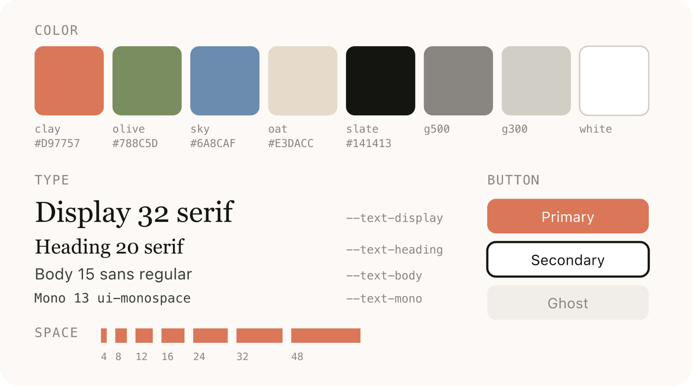

Why Your Brand Needs a Style Guide
A brand is the total impression you leave on every person who encounters your business, the colours on your website, the words in a notification, the font on a button, the tone of an error message. All of it either feels like one coherent project, or it doesn't.
A brand style guide is the document that makes sure it always does.
When your brand has consistency, looks, sounds, and feels the same everywhere, people start to recognise it. Recognition becomes familiarity. Familiarity becomes trust. And trust is the thing your competitors can't buy their way into overnight.
When the foundational decisions are already made, you're not starting from zero every time. You're working inside a system that already holds together, which means faster execution.
What Goes Into One
A complete brand style guide covers the following:
- Foundation — your purpose, values, and positioning.
- Colour — your full palette, with exact hex codes and clear use cases for each colour.
- Typography — your typefaces, sizes, weights, and spacing for every context from hero headlines to body copy to button labels.
- Voice and tone — the personality of your brand in words. How you write, what you avoid, and what good copy actually sounds like.
- Design rules — a clear, specific Do / Don't list so anyone making something can make it correctly. (In this case AI)
How to Build One from Scratch
You don't need to get it perfect on the first pass. The goal is to get something concrete enough that decisions start to feel automatic.
Step 1 — Start with brand foundation. Before you touch a colour or pick a font, write down why you exist, what you're trying to become, and what you refuse to be. Purpose, vision, mission, and values. These aren't corporate exercises. They're the brief that every design and copy decision flows from. If you can't articulate what your brand stands for, you can't make good decisions about what it should look like.
Step 2 — Define your audience and tone. Who are you talking to, and how do you talk to them? Write down three adjectives that describe how your brand sounds. Then write examples of a copy that lands, and a copy that doesn't, so anyone writing for the brand can calibrate quickly.
Step 3 — Build the colour palette. Start with a primary colour, the one that appears on your logo, your main call-to-action, your most important moments. Then work outward: a dark structural colour for text and backgrounds, light neutral surfaces for body content, and accent colours for hover and feedback states. Give every colour a name, a hex code, and a clear use case. Hex codes are non-negotiable.
Step 4 — Choose and spec the typography. You need a maximum of two typefaces. One for display and headline use (usually with more character), and one for body copy and UI (usually clean and readable). For each, define the size, weight, letter spacing, and line height for every context: hero headline, section heading, body copy, button label, caption.
Step 5 — Document your UI components. If your brand lives in a digital product, document the components. Buttons, badges, cards, form inputs. Write down exactly how each one is built: background colour, text colour, border radius, hover state. If it appears on screen, it should be in the guide.
Step 6 — Write the rules. A clear Do / Don't list. Short, specific, unambiguous. "Never use emoji in brand materials" is more useful than "maintain a professional visual standard."
Step 7 — Keep it alive. A style guide last updated two years ago is worse than no style guide, because it generates false confidence. The brand will evolve. The guide needs to evolve with it.
How to Use AI to Build Your Brand
This is where it gets practical. You can use Claude to build a full brand system from scratch, in stages. Each conversation builds on the last. The process below works whether you're starting from nothing or trying to formalise something that already half-exists.
Stage 1 — The Brand Brief
Start with context. Claude needs to understand what you're building before it can help you make it look like anything.
A prompt you can build the framework with:
"I'm building a product called [NAME]. It's a [one-line description: what it does, who it's for]. The audience is [specific description]. The brand should feel [3-5 adjectives]. It should not feel [2-3 adjectives you want to avoid]. Here are some brands I admire for reference: [examples]. Help me develop a colour palette and a typography system that fits this positioning."
The more specific you are about audience and feeling, the better. "Premium and trustworthy" is vague. "The quiet confidence of someone who has been doing this for ten years and doesn't need to prove it" is a brief Claude can work with.
Stage 2 — Colour Palette
Once Claude has the brand context, ask for a full colour palette with exact hex codes and use-case rationale.
Push back and iterate — most important. Ask Claude to justify its choices. "Why this blue and not a warmer blue?" Keep refining until the palette matches the feeling. Once you land on something, ask Claude to define the contrast rules: which colours can sit on top of which others, and which combinations are off limits.
Stage 3 — Typography
Ask Claude to show examples of each type style in context. This is where you catch things that look good on a spec sheet but feel wrong in practice.

Stage 4 — Voice and Tone
"Help me define the brand voice. The brand personality is [adjectives]. The audience is [description]. Write: a brand headline, a social media post, a body paragraph for the landing page, and a short brand-does / brand-does-not list for anyone writing a copy to reference from."
Keep asking Claude to rewrite until the copy sounds like a real person who genuinely understands the product and the audience.
Stage 5 — The Full Guide
Once all the pieces exist, ask Claude to assemble them.
"Compile everything we've defined, purpose, colours, typography, voice, and design rules, into a comprehensive brand style guide. Format it as [markdown / a Word document / HTML], with clear sections and all hex codes and font specs included."
This is the document you hand to anyone who works on the brand.
Things That Break Brand Consistency
You can have a solid brand system and still watch it fall apart. These are the most common ways it happens:
Approximate colour use. Someone grabs a colour that looks close but isn't. Over time your brand starts to drift. Hex codes exist for a reason. Use them every time, no exceptions.
Too many typefaces. Two is the maximum. More than that and the brand starts to look like a ransom note. When in doubt, use the body typeface.
A copy that sounds like no one. Generic, corporate, jargon-heavy copy is invisible. If your brand voice isn't defined and documented, every writer invents their own version of it. Define the personality. Write real examples. Update them as the brand matures.
A style guide that stops getting updated. The document is only useful if it reflects the current reality. Set a recurring reminder to review it. Treat it as a living document.
Inconsistency across formats. The brand looks one way on the website and another way on a slide deck and another way on social. Define rules that work across contexts, not just for one format.
No single point of truth. If the style guide lives in three different places and no one knows which version is current, it effectively doesn't exist. Pick one home for it and make sure everyone knows where it is.
"A brand style guide is not a creative constraint. It's a decision you made once so you don't have to make it again under pressure, at speed, when it matters most. Build it early. Keep it current. Use it every time".
- Claude ↗SubscriptionPro or Max · from $20/mo
- Google Fonts ↗FreeFree type library